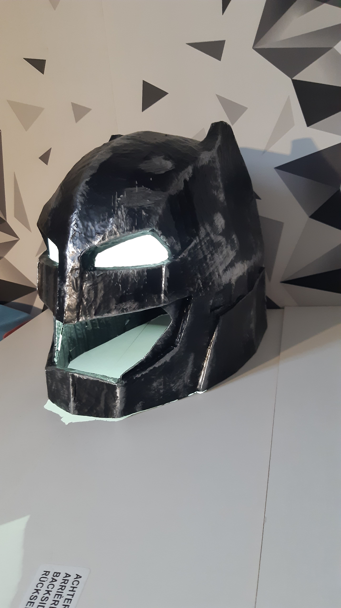

01 · batman
batman
Écaille dorée — translucide en contre-jour

02 · Atelier
Façonnage
Découpe, ébauche et ponçage de la façade

03 · Finition
Monture Optique
Acétate écaille — forme hexagonale vintage

04 · Création
Pièce Unique
Monture sculpture — Métiers d'Excellence

05 · Art
Sculpture Optique
Assemblage de plaques multicolores

06 · Solaire
Lunettes Solaires
Acétate fumé — verres teintés gris

07 · Collection
Monture Carrée
Façade acétate ambré — style rétro

08 · Conception
Plan Technique
Dessin de gabarit — tracé au compas